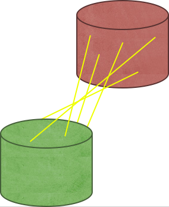
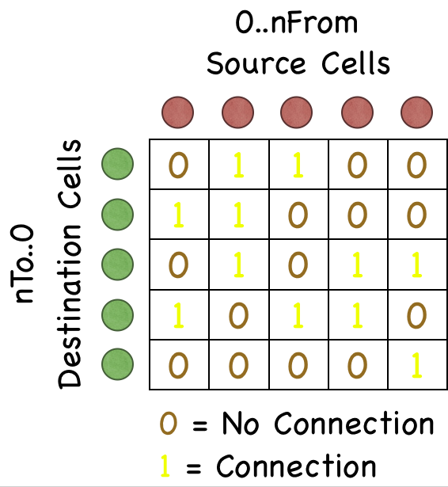

Connect Maps in NCS

After synaptic connections have been made, NCS can output a data file
containing a map of connections between two cell clusters in the simulation.
This file will be named:
job name#source column.source layer.source cellgroup.source compartment#to#destination column.destination layer.destination cellgroup.destination compartment#synapse name.connectmap.txt,
where "job" is the name given in the JOB field of the Brain Block.
File Format
The file will only have cell indices of cells that are connected. The file is sorted in ascending order of source cell indices.
Source cell index Destination cell index
Internal NCS Connection Matrix Representation
Internally, the connections are laid out in a matrix format. The columns correspond to
source cells while the rows correspond to the destination cells. Entries will either
be a zero (0) or a one (1), where zero represents no connection between the cells while
a one represents a connection. Note: The source and destination clusters may represent
the same cluster. If that is the case, a single cell will not be allowed to connect to
itself.

Sample Output
Connect Map File Name: x_0022_Setup2#R2A_AI_1.layer_R2.E1.sE1#to#R2A_AI_1.layer_R2.E1.sE1#ExcitSyn1_Intra_E1.connectmap.txt
1 2
1 6
1 8
1 11
1 15
1 28
1 31
1 36
1 37